Puedes entrar en este santuario desde que llegas a la región de la torre de Eldin, aunque debes superar la Prueba heroica "A por el hermano perdido" para que la entrada quede desenterrada. Para activarla habla con Baraduk, al que puedes encontrar dentro de la primera casa que hay al entrar en la Ciudad Goron e ir por la calle de la izquierda, (noroeste de la ciudad).
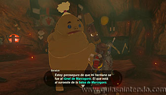
La prueba consiste en encontrar al hermano de Baraduk en el túnel Marcogoro (al sur de la Balsa de Marcogoro). Dirígete hasta allí después de hablar con él y recorre el túnel hasta el final. Encontrarás al hermano perdido, pero no podrás hacer nada de momento.
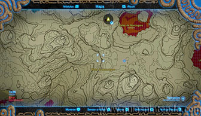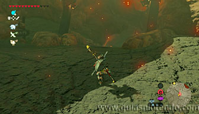
Tendrás que salir del túnel y girar a la izquierda, así podrás llegar a Risco Rocoso. Es una pendiente que te lleva hasta varios rocodillos goroasado. Necesitas coger uno y subir toda la pendiente para regresar al túnel. Al dárselo al hermano conseguirás que se recupere y así conseguirás descubrir la entrada del santuario. El problema es que la pendiente está llena de enemigos y de rocas que caen desde arriba.
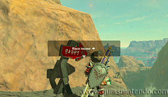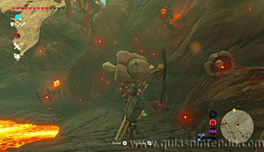
El problema es que la pendiente está llena de enemigos y de rocas que caen desde arriba. Lo mejor es que antes de coger el rocodillo, limpies la zona de enemigos y después vayas avanzando pegado a la pared para esquivar las rocas.
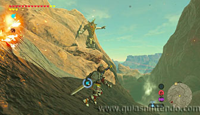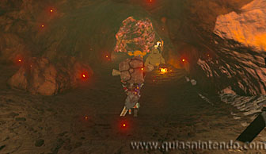
Al entregar el rocodillo completarás la prueba heroica y podrás entrar en el santuario.
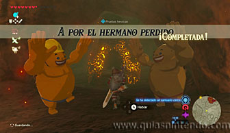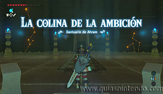
Aquí dentro solo debes avanzar y subir la gran rampa que encuentras. Hay tres carriles por donde caerán rocas, bolas con pinchos y también rupias. Si vas cambiando de carril no es complicado ir avanzando.
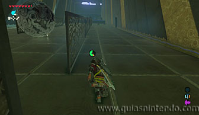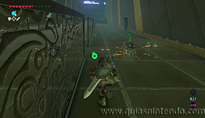
Puedes conseguir dos cofres aquí dentro. El primero está en el lado derecho, en un pequeño hueco. Contiene un rubí.
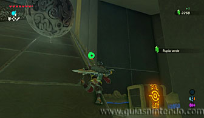
El segundo está en el lado izquierdo, pero ya casi arriba del todo. Sube la rampa hasta la esquina y date la vuelta para saltar planeando hacia el cofre. Contiene 5 flechas bomba.
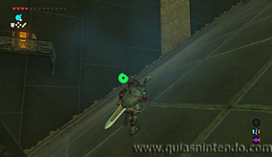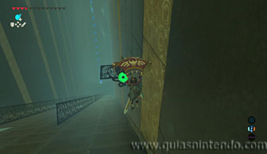
Después continúa hasta el altar. Cuando llegues a él podrás examinarlo para obtener un símbolo de valía.
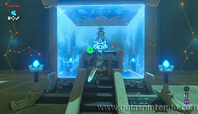